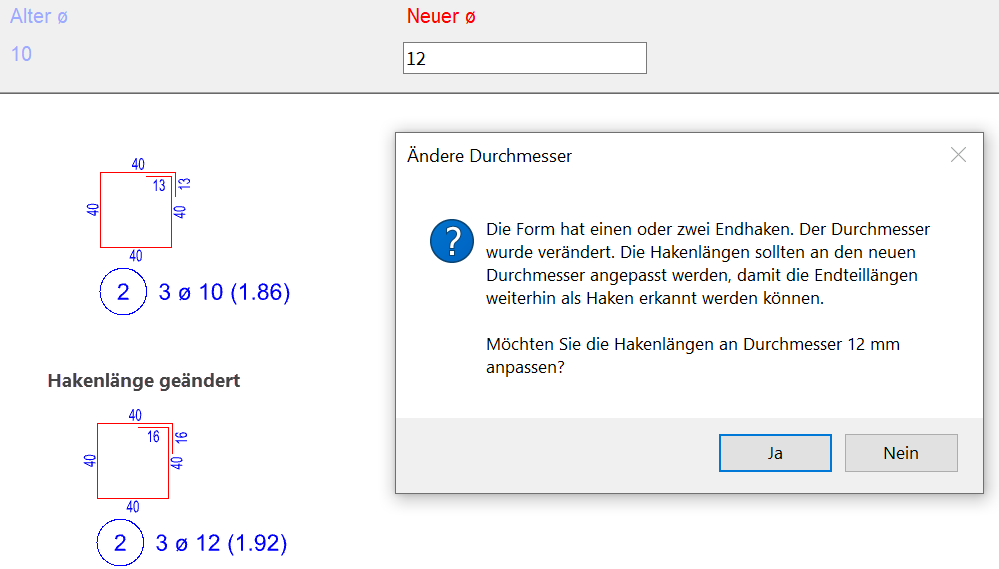
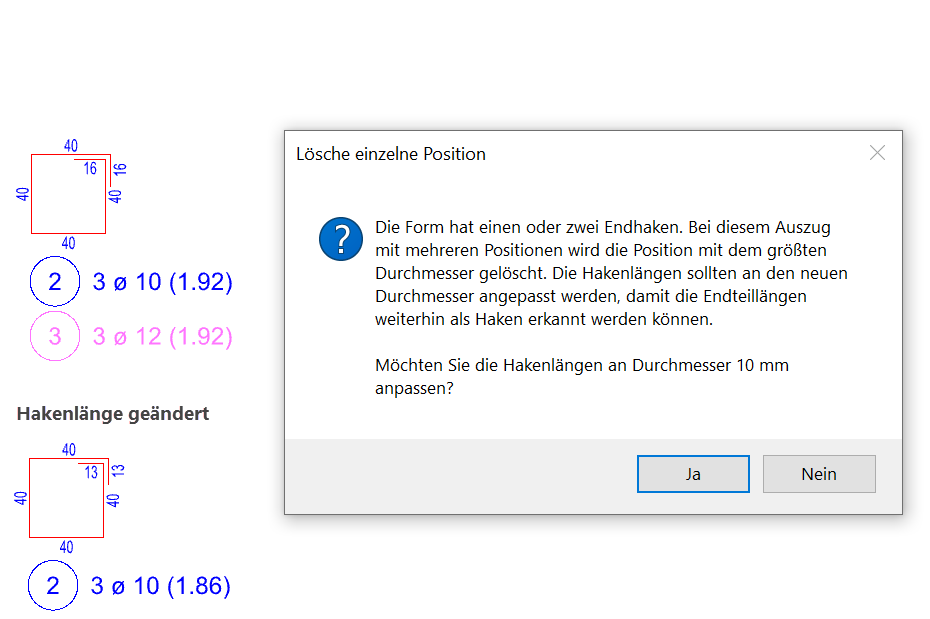
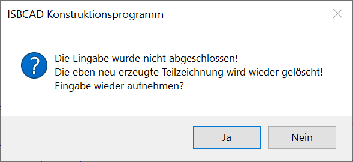

Sie können die automatische Anpassungsfunktion verwenden, um die Hakenlängen einer Auszugsform an einen neuen Positionsdurchmesser anzupassen. Wenn eine Position durch einen Bearbeitungsschritt so geändert wird, dass die Hakenlängen an der Auszugsform nicht mehr mit dem Positionsdurchmesser übereinstimmen, haben Sie die Möglichkeit, eine automatische Anpassung vorzunehmen.
·Die Funktion steht im Formstahl-Menü in den Methoden zum Verlegen, Ändern und Löschen zur Verfügung. Ebenso ist sie in das Datei-Menü beim Auslagern und Kopieren in die ISBCAD Zwischenablage integriert.
·Sind mehrere Positionen an einer Auszugsform vorhanden und die Position mit dem größten Durchmesser wird z. B. gelöscht oder entflochten, können die Hakenlängen der neuen oder alten Auszugsform an den größeren verbleibenden Durchmesser angepasst werden.
·Zugehörige Verlegungen und Positionierungen werden ebenfalls angepasst.
Automatische Anpassung aktivieren oder deaktivieren
In der Standardeinstellung ist die automatische Hakenanpassung aktiviert. Durch die Deaktivierung können Sie die automatische Anpassung für alle vorhandenen und neu erstellten Auszugsformen dauerhaft abschalten.
Um die Funktion zu deaktivieren oder bei Bedarf wieder zu aktiveren, gehen Sie wie folgt vor:
·Klicken Sie im rechten Menü auf Option → Einste oder wählen Sie in der ISBCAD Menüleiste unter Optionen den Eintrag Einstellungen.
·Im Dialog Einstellungen aktivieren Sie (zum Aktivieren) oder deaktivieren Sie (zum Deaktivieren) das Kontrollkästchen automatische Hakenerkennung bei Formstahl und klicken Sie auf OK.
Automatische Anpassung vornehmen
Wenn die automatische Anpassung aktiviert ist, können Sie die Hakenlängen der Auszugsform an den neuen (größeren oder kleineren) Stabdurchmesser anpassen.
·Sie erhalten von ISBCAD eine Meldung mit zusätzlichen Informationen.
·Klicken Sie in der ISBCAD-Meldung auf Ja.
Beispiel: [Formst | BiForm → ändDu] |
Beispiel: [Formst | BiForm → lö Pos] |
|---|---|
Der Stabdurchmesser der Position 2 wird von 10 mm auf 12 mm geändert. Die Hakenlängen werden an den neuen Durchmesser 12 mm angepasst. |
An der Auszugsform mit zwei Positionen wird die Position 3 mit dem Stabdurchmesser 12 mm gelöscht. Die Hakenlängen der Auszugsform werden an den verbleibenden größeren Durchmesser 10 mm angepasst. |
 |
 |
Automatische Anpassung für einzelne Auszugsformen deaktivieren
·Sie können die automatische Anpassung außer Kraft setzen, indem Sie in der Meldung auf Nein klicken. Dadurch wird die zukünftige automatische Anpassung für die jeweilige Auszugsform deaktiviert.
·Die automatische Anpassung wird ebenfalls für einzelne Endteillängen deaktiviert, die manuell mit den Funktionen [ändTlg] oder [addTlg] bearbeitet wurden.
Automatische Anpassung für einzelne Auszugsformen wieder aktivieren
Wenn Sie in der Meldung auf Nein geklickt oder Endteillängen anderweitig bearbeitet haben, ist eine Aktivierung der automatischen Anpassung wieder möglich.
Passen Sie in diesem Fall die Endteillängen der Auszugsform mit [ändTlg] oder den Positionsdurchmesser mit [ändDu] so an, dass die Werte in der folgenden Tabelle gelten (s. Tabelle). Nach der Änderung werden die Endteillängen wieder als Haken erkannt und die automatische Anpassung aktiviert.
Stabdurchmesser |
Hakenlänge in m |
|---|---|
6 |
0.08 m |
8 |
0.11 m |
10 |
0.13 m |
12 |
0.16 m |
14 |
0.19 m |
16 |
0.21 m |
20 |
0.29 m |
25 |
0.37 m |
28 |
0.41 m |
32 |
0.47 m |
40 |
0.58 m |
50 |
0.73 m |
Automatische Anpassung fortsetzen oder abbrechen
Wenn nach der Bestätigung der automatischen Anpassung noch weitere Abfragen folgen, Sie aber vorzeitig die Funktion wechseln, erhalten Sie die folgende Meldung:
 |
·Klicken Sie auf Ja, um die Bearbeitung fortzusetzen.
·Klicken Sie auf Nein, um die Bearbeitung abzubrechen und alle Änderungen zu verwerfen. Dadurch wird die Ausgangssituation wieder hergestellt und ISBCAD wechselt in die angeklickte Funktion.
Siehe auch:
·Hakenlängen an Auszugsform runden
·Automatische Hakenanpassung aktivieren oder deaktivieren (Einstellungen)